CODING AGENTS AS PIXEL WORLD MODELS
traex/DeepSeek-V4.1-Flash · 0039
点击播放 · 原生 RGB 像素
逐轮保存的候选
回放视频、检查图与代码变化。
每份候选均可单独播放。实际图片检查记录在下方工具轨迹中。
候选 01播放与检查图
点击播放 · 原生 RGB 像素
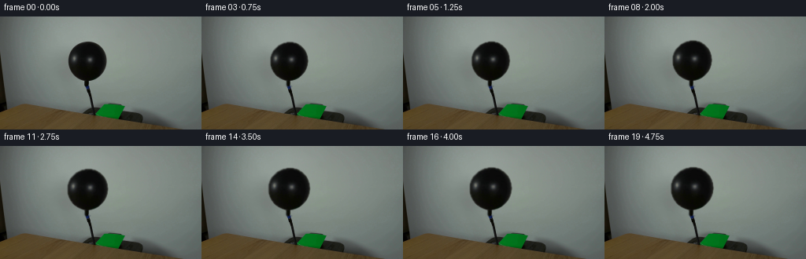
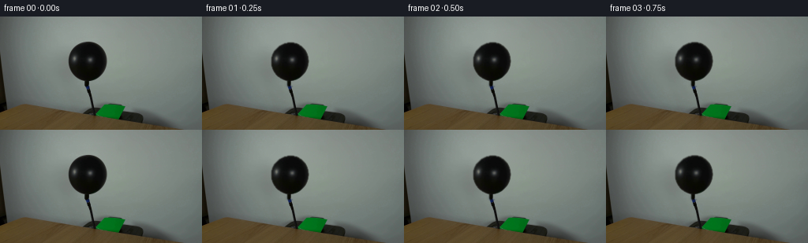
展开代码变化
--- 上一保存版本
+++ 本次保存版本
@@ -0,0 +1,159 @@
+from pathlib import Path
+
+import cv2
+import numpy as np
+from PIL import Image
+
+import artifact_io
+
+
+CASE_DIR = Path(__file__).resolve().parent
+WIDTH, HEIGHT = 256, 144
+N_FRAMES = 20
+
+
+def smoothstep(value):
+ value = np.clip(value, 0.0, 1.0)
+ return value * value * (3.0 - 2.0 * value)
+
+
+def balloon_mask(frame):
+ """Find the dark balloon, excluding the table and the thin hose."""
+ gray = cv2.cvtColor(frame, cv2.COLOR_RGB2GRAY)
+ roi = np.zeros_like(gray, dtype=np.uint8)
+ roi[27:90, 82:140] = 1
+ candidate = ((gray < 108) & (roi > 0)).astype(np.uint8)
+
+ count, labels, stats, _ = cv2.connectedComponentsWithStats(candidate, 8)
+ if count <= 1:
+ raise RuntimeError("Could not segment the balloon")
+ index = 1 + int(np.argmax(stats[1:, cv2.CC_STAT_AREA]))
+ mask = (labels == index).astype(np.uint8)
+ mask = cv2.morphologyEx(mask, cv2.MORPH_CLOSE, np.ones((3, 3), np.uint8))
+
+ # Keep the balloon's rounded body while removing any thin stem leakage.
+ contours, _ = cv2.findContours(mask, cv2.RETR_EXTERNAL, cv2.CHAIN_APPROX_NONE)
+ contour = max(contours, key=cv2.contourArea)
+ mask[:] = 0
+ cv2.drawContours(mask, [contour], -1, 1, cv2.FILLED)
+ return mask
+
+
+def soft_alpha(mask):
+ """A one-pixel antialiased edge without changing the body of the balloon."""
+ inner = cv2.erode(mask, np.ones((2, 2), np.uint8), iterations=1)
+ alpha = cv2.GaussianBlur(inner.astype(np.float32), (0, 0), 0.72)
+ return np.clip(alpha, 0.0, 1.0)
+
+
+def make_background(frame, original_mask, anchor, max_scale):
+ """Reconstruct the wall hidden by the largest balloon extent."""
+ matrix = cv2.getRotationMatrix2D(anchor, 0.0, max_scale)
+ expanded = cv2.warpAffine(
+ original_mask,
+ matrix,
+ (WIDTH, HEIGHT),
+ flags=cv2.INTER_NEAREST,
+ borderMode=cv2.BORDER_CONSTANT,
+ )
+ repair = cv2.dilate(expanded, np.ones((5, 5), np.uint8), iterations=1)
+ repair[90:, :] = 0
+ return cv2.inpaint(frame, repair, 4.0, cv2.INPAINT_TELEA)
+
+
+def warp_balloon(frame, scale_x, scale_y, anchor):
+ """Inverse-map the source balloon around its fixed neck."""
+ yy, xx = np.mgrid[0:HEIGHT, 0:WIDTH]
+ yy = yy.astype(np.float32)
+ xx = xx.astype(np.float32)
+ source_x = (anchor[0] + (xx - anchor[0]) / scale_x).astype(np.float32)
+ source_y = (anchor[1] + (yy - anchor[1]) / scale_y).astype(np.float32)
+ return cv2.remap(
+ frame,
+ source_x,
+ source_y,
+ interpolation=cv2.INTER_CUBIC,
+ borderMode=cv2.BORDER_REFLECT_101,
+ )
+
+
+def warped_mask(mask, scale_x, scale_y, anchor):
+ yy, xx = np.mgrid[0:HEIGHT, 0:WIDTH]
+ yy = yy.astype(np.float32)
+ xx = xx.astype(np.float32)
+ source_x = (anchor[0] + (xx - anchor[0]) / scale_x).astype(np.float32)
+ source_y = (anchor[1] + (yy - anchor[1]) / scale_y).astype(np.float32)
+ return cv2.remap(
+ mask,
+ source_x,
+ source_y,
+ interpolation=cv2.INTER_LINEAR,
+ borderMode=cv2.BORDER_CONSTANT,
+ borderValue=0,
+ )
+
+
+def add_soft_specular(balloon, target_mask, progress, anchor):
+ """Add a restrained pressure highlight while retaining the source texture."""
+ yy, xx = np.mgrid[0:HEIGHT, 0:WIDTH]
+ yy = yy.astype(np.float32)
+ xx = xx.astype(np.float32)
+ cx = anchor[0] + 7.0
+ cy = anchor[1] - 28.0
+ lobe = np.exp(-(((xx - cx) / 6.2) ** 2 + ((yy - cy) / 5.2) ** 2))
+ light = (3.2 * progress * lobe * target_mask)[..., None]
+ result = balloon.astype(np.float32) + light
+ return np.clip(result, 0.0, 255.0)
+
+
+def generate():
+ first = np.asarray(Image.open(CASE_DIR / "first_frame.png").convert("RGB"), dtype=np.uint8)
+ if first.shape != (HEIGHT, WIDTH, 3):
+ raise ValueError(first.shape)
+
+ original_mask = balloon_mask(first)
+ original_alpha = soft_alpha(original_mask)
+ anchor = (111.0, 84.0)
+ max_scale_x, max_scale_y = 1.135, 1.115
+ background = make_background(first, original_mask, anchor, max(max_scale_x, max_scale_y))
+
+ frames = np.empty((N_FRAMES, HEIGHT, WIDTH, 3), dtype=np.uint8)
+ frames[0] = first
+
+ for index in range(1, N_FRAMES):
+ progress = smoothstep(index / (N_FRAMES - 1))
+ scale_x = 1.0 + (max_scale_x - 1.0) * progress
+ scale_y = 1.0 + (max_scale_y - 1.0) * progress
+
+ balloon = warp_balloon(first, scale_x, scale_y, anchor)
+ target = warped_mask(original_alpha, scale_x, scale_y, anchor)
+ target = cv2.GaussianBlur(target, (0, 0), 0.38)
+ balloon = add_soft_specular(balloon, target, progress, anchor)
+
+ frame = background.astype(np.float32)
+ alpha = target[..., None]
+ frame = frame * (1.0 - alpha) + balloon * alpha
+
+ # A very slight pressure tremor at the neck, fading away from the knot.
+ phase = 2.0 * np.pi * index / 5.0
+ tremor = 0.12 * np.sin(phase) * progress
+ if abs(tremor) > 0.02:
+ matrix = np.float32([[1.0, 0.0, tremor], [0.0, 1.0, 0.0]])
+ shifted = cv2.warpAffine(
+ np.clip(frame, 0, 255).astype(np.uint8),
+ matrix,
+ (WIDTH, HEIGHT),
+ flags=cv2.INTER_LINEAR,
+ borderMode=cv2.BORDER_REFLECT_101,
+ )
+ neck_weight = np.clip((np.arange(HEIGHT) - 78.0) / 24.0, 0.0, 1.0)
+ neck_weight = neck_weight[:, None, None] * 0.35
+ frame = frame * (1.0 - neck_weight) + shifted * neck_weight
+
+ frames[index] = np.clip(frame + 0.5, 0.0, 255.0).astype(np.uint8)
+
+ artifact_io.save(frames, CASE_DIR)
+
+
+if __name__ == "__main__":
+ generate()
可观测工具轨迹
实际执行的命令与返回图片。
命令 1exit 0
/bin/bash -c "pwd && rg --files -g 'prompt.txt' -g 'GENERATION_RULES.md' -g 'first_frame.png' -g '"'!*.git*'"'"
命令 2exit 0
/bin/bash -c 'ls -la'
命令 3exit 0
/bin/bash -c 'cat prompt.txt'
命令 4exit 0
/bin/bash -c 'cat GENERATION_RULES.md'
命令 5exit 0
/bin/bash -c "sed -n '1,240p' artifact_io.py"
命令 6exit 0
/bin/bash -c "find .agents .codex .aws .tmp -maxdepth 3 -type f -printf '%p\\n' 2>/dev/null | sort"
命令 7exit 0
/bin/bash -c "python - <<'PY'
from PIL import Image
im=Image.open('first_frame.png')
print(im.size, im.mode)
im.crop((60,20,160,120)).resize((600,600)).save('.tmp/balloon_crop.png')
PY"命令 8exit 0
/bin/bash -c "python - <<'PY' mods=['numpy','PIL','cv2','scipy','skimage'] for m in mods: try: x=__import__(m); print(m, getattr(x,'__version__','ok')) except Exception as e: print(m,'ERR',e) PY"
命令 9exit 0
/bin/bash -c "python - <<'PY'
from PIL import Image
import numpy as np
im=np.array(Image.open('first_frame.png'))
pts=[(111,63),(111,30),(111,90),(90,63),(133,63),(112,100),(118,114),(117,123),(125,125),(135,130),(220,50),(10,50),(150,120)]
for x,y in pts: print((x,y),im[y,x])
# min max around ball
crop=im[25:100,70:155]
print('crop min max mean',crop.reshape(-1,3).min(0),crop.reshape(-1,3).max(0),crop.reshape(-1,3).mean(0))
PY"命令 10exit 0
/bin/bash -c "python - <<'PY'
from PIL import Image
import numpy as np
im=np.array(Image.open('first_frame.png')).astype(float)
g=im.mean(2)
for y in range(20,110,4):
xs=np.where(g[y,:]<65)[0]
# contiguous groups
groups=[]
if len(xs):
s=p=xs[0]
for x in xs[1:]:
if x>p+1: groups.append((s,p)); s=x
p=x
groups.append((s,p))
print(y,groups)
PY"命令 11exit 0
/bin/bash -c "python - <<'PY'
from PIL import Image
import numpy as np
im=np.array(Image.open('first_frame.png'))
for y in range(100,144,3):
g=im[y].mean(1)
xs=np.where(g<75)[0]
groups=[]
if len(xs):
s=p=xs[0]
for x in xs[1:]:
if x>p+1: groups.append((int(s),int(p))); s=x
p=x
groups.append((int(s),int(p)))
print(y,groups)
PY"命令 12exit 0
/bin/bash -c "python - <<'PY'
from PIL import Image
im=Image.open('first_frame.png')
im.crop((75,20,145,120)).resize((700,1000)).save('.tmp/detail.png')
im.crop((90,85,140,135)).resize((500,500)).save('.tmp/knot.png')
PY"命令 13exit 0
/bin/bash -c "python - <<'PY'
from PIL import Image
import numpy as np
im=np.array(Image.open('first_frame.png')).astype(float)
for y in range(20,120):
vals=im[y]
# classify bg using expected radial gradients maybe print RGB x coordinates
if y%5==0:
print('\\ny',y)
for x in [80,85,87,88,90,92,94,96,100,105,110,115,120,125,130,133,134,136,140]:
print(x,tuple(vals[x].astype(int)),end='; ')
print()
PY"命令 14exit 0
/bin/bash -c "python - <<'PY'
import cv2, numpy as np
from PIL import Image
im=np.array(Image.open('first_frame.png'))
g=im.mean(2)
roi=(slice(25,90),slice(82,140))
mask=np.zeros(g.shape,np.uint8)
mask[roi]=(g[roi]<105).astype(np.uint8)*255
# remove small? cc largest
n,lab,stats,cens=cv2.connectedComponentsWithStats(mask)
for i in range(1,n):
x,y,w,h,a=stats[i];
if a>20: print(i,x,y,w,h,a,cens[i])
# largest likely
idx=1+np.argmax(stats[1:,cv2.CC_STAT_AREA]); m=(lab==idx).astype(np.uint8)*255
m=cv2.morphologyEx(m,cv2.MORPH_CLOSE,np.ones((3,3),np.uint8))
cv2.imwrite('.tmp/mask.png',m)
# overlay
out=im.copy(); out[m>0]=(out[m>0]*.4+np.array([255,0,0])*.6).astype(np.uint8)
Image.fromarray(out).resize((1024,576)).save('.tmp/mask_overlay.png')
# contour points around center
cnts,_=cv2.findContours(m,cv2.RETR_EXTERNAL,cv2.CHAIN_APPROX_SIMPLE)
print('contour area',max(cv2.contourArea(c) for c in cnts))
PY"命令 15exit 1
/bin/bash -c 'python generate.py'
命令 16exit 1
/bin/bash -c 'python generate.py'
命令 17exit 0
/bin/bash -c 'python generate.py'
命令 18exit 0
/bin/bash -c "python - <<'PY'
from PIL import Image
import numpy as np
for i in [0,5,10,15,19]:
im=Image.open(f'frames/{i:02d}.png')
im.crop((75,20,150,125)).resize((600,840)).save(f'.tmp/f{i:02d}_zoom.png')
# numeric checks
first=np.array(Image.open('first_frame.png'))
f0=np.array(Image.open('frames/00.png'))
f19=np.array(Image.open('frames/19.png'))
print('exact first:',np.array_equal(first,f0),'max diff',np.abs(first.astype(int)-f0.astype(int)).max())
print('diff changed pixels 0->19:',np.any(first"'!=f19,axis=2).sum())
print('"'frame range',f19.min(),f19.max())
PY"命令 19exit 0
/bin/bash -c "python - <<'PY'
import cv2,numpy as np
from PIL import Image
im=np.array(Image.open('first_frame.png'))
# show pixel diff locations, structure checks
f19=np.array(Image.open('frames/19.png'))
d=np.abs(f19.astype(int)-im.astype(int)).max(2)
for th in [1,2,5,10,20,40]: print(th,(d>=th).sum())
# bounding box
ys,xs=np.where(d>2); print(xs.min(),xs.max(),ys.min(),ys.max())
# changed rows near top
for y in range(20,110,5):
xs2=np.where(d[y]>2)[0]
if len(xs2): print(y,xs2.min(),xs2.max(),len(xs2))
PY"命令 20exit 0
/bin/bash -c "python - <<'PY'
import cv2,numpy as np
from PIL import Image
im=np.array(Image.open('first_frame.png'))
g=cv2.cvtColor(im,cv2.COLOR_RGB2GRAY)
# direct color/dark threshold in ball region, determine contour by mask
cand=np.zeros_like(g,np.uint8); cand[27:90,82:140]=(g[27:90,82:140]<110)
n,lab,stats,c=cv2.connectedComponentsWithStats(cand)
idx=1+np.argmax(stats[1:,4]); m=(lab==idx).astype(np.uint8)
cnt=max(cv2.findContours(m,cv2.RETR_EXTERNAL,cv2.CHAIN_APPROX_NONE)[0],key=cv2.contourArea)
# fit ellipse from contour
el=cv2.fitEllipse(cnt); print(el)
# rows extents
for y in [32,33,34,35,40,50,60,70,80,85,89]:
xs=np.where(m[y]>0)[0]; print(y,(xs.min(),xs.max(),len(xs)) if len(xs) else None)
# actual ball apparent x/y extents: g<100 area, bounding
ys,xs=np.where((g<100)&(np.indices(g.shape)[0]>=30)&(np.indices(g.shape)[0]<90)&(np.indices(g.shape)[1]>=80)&(np.indices(g.shape)[1]<140))
print('dark bounds',xs.min(),xs.max(),ys.min(),ys.max())
PY"命令 21exit 0
/bin/bash -c "python - <<'PY'
from PIL import Image,ImageDraw
ims=[]
for i in [0,5,10,15,19]:
im=Image.open(f'frames/{i:02d}.png').crop((75,20,150,125)).resize((300,420))
ims.append((i,im))
out=Image.new('RGB',(1500,450),(30,30,30)); d=ImageDraw.Draw(out)
for j,(i,im) in enumerate(ims):
out.paste(im,(j*300,30)); d.text((j*300+5,5),f'{i/4:.2f}s',fill='white')
out.save('.tmp/evolution.png')
PY"命令 22exit 0
/bin/bash -c "python - <<'PY'
from PIL import Image
import numpy as np
for i in [0,1,2,5,10,19]:
im=np.array(Image.open(f'frames/{i:02d}.png')).astype(float)
# dark bounding in ball area and center of dark
roi=im[20:100,75:150].mean(2)
ys,xs=np.where(roi<70)
print(i,'bbox', (xs.min()+75,xs.max()+75,ys.min()+20,ys.max()+20), 'area',len(xs))
PY"命令 23exit 0
/bin/bash -c "python - <<'PY'
from PIL import Image
import numpy as np
f0=np.array(Image.open('frames/00.png')).astype(int)
for i in [1,2,3,4,5,10,19]:
f=np.array(Image.open(f'frames/{i:02d}.png')).astype(int)
d=np.abs(f-f0).max(2)
print(i,'changed', (d>0).sum(),'mean diff region',d[20:100,75:150].mean(),'max',d.max())
PY"命令 24exit 0
/bin/bash -c "python - <<'PY'
import generate
from PIL import Image
import numpy as np
im=np.array(Image.open('first_frame.png'))
m=generate.balloon_mask(im)
bg=generate.make_background(im,m,(111.,84.),1.22)
Image.fromarray(bg).crop((60,10,165,110)).resize((630,600)).save('.tmp/bg_zoom.png')
Image.fromarray(bg).save('.tmp/bg.png')
PY"命令 25exit 0
/bin/bash -c "python - <<'PY'
from PIL import Image
im=Image.open('first_frame.png')
# difference bg to first in bbox wall
import numpy as np
bg=np.array(Image.open('.tmp/bg.png')).astype(int); im0=np.array(im).astype(int)
for y in [30,35,40,50,60,70,75]:
print('y',y)
for x in [90,100,110,120,130]:
print(x,tuple(im0[y,x]),tuple(bg[y,x]))
PY"命令 26exit 0
/bin/bash -c "python - <<'PY'
import cv2,numpy as np
from PIL import Image
im=np.array(Image.open('first_frame.png'))
# exact pixel noise around edge - view after upscale nearest
Image.fromarray(im).crop((80,25,142,95)).resize((620,700),Image.Resampling.NEAREST).save('.tmp/edge_nearest.png')
# inspect line profile center
for y in [30,31,32,33,34,35,36,37,38,39,40,50,60,70,75,78,80,82,84,86]:
vals=im[y].mean(1)
xs=np.where(vals<115)[0]
xs=xs[(xs>70)&(xs<150)]
if len(xs): print(y,xs.min(),xs.max(), [int(vals[x]) for x in range(max(0,xs.min()-2),min(255,xs.min()+4))])
PY"命令 27exit 0
/bin/bash -c "python - <<'PY'
import cv2,numpy as np
from PIL import Image
im=np.array(Image.open('first_frame.png')).astype(np.float32)
# Estimate smooth background color row-wise outside object, fit polynomial across x for each row using wall pixels
# inspect known background sample positions, and derive quadratic interpolation around ball x 82-139
for y in [32,40,50,60,70,75,80,85]:
row=im[y].mean(1)
xin=np.r_[80:86,141:160]
print(y,[(x,int(row[x])) for x in xin])
PY"命令 28exit 0
/bin/bash -c "python -m py_compile generate.py && python - <<'PY'
from pathlib import Path
import numpy as np
from PIL import Image
first=np.asarray(Image.open('first_frame.png').convert('RGB'))
frames=np.stack([np.asarray(Image.open(f'frames/{i:02d}.png').convert('RGB')) for i in range(20)])
p=np.load('pixels.npz')['pixels']
print('frames',frames.shape,frames.dtype)
print('first_exact',np.array_equal(frames[0],first))
print('packed',p.shape,p.dtype)
print('html_bytes',Path('index.html').stat().st_size)
print('npz_bytes',Path('pixels.npz').stat().st_size)
# all RGB channels remain in range and sequence has gradual changed-pixel counts
for i in range(1,20):
changed=np.any(frames[i]"'!=frames[i-1],axis=2).sum()
if i in (1,5,10,15,19): print('"'step',i,changed)
PY"命令 29exit 0
/bin/bash -c "ls -lh generate.py first_frame.png frames/00.png frames/19.png inspection.png transition_check.png index.html pixels.npz && find frames -maxdepth 1 -name '*.png' | wc -l"
命令 30exit 0
/bin/bash -c 'git status --short 2>/dev/null || true'
视觉工具实际返回图片 1
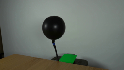
视觉工具实际返回图片 2
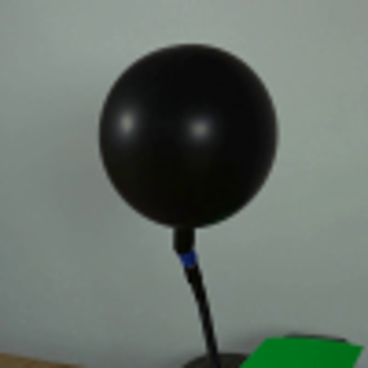
视觉工具实际返回图片 3
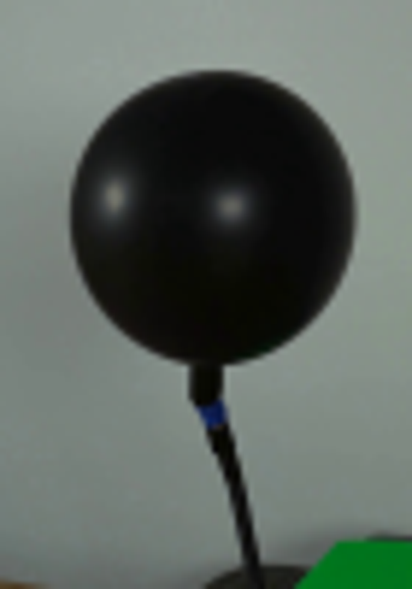
视觉工具实际返回图片 4
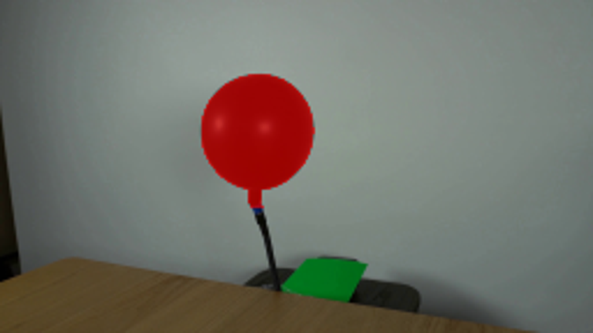
视觉工具实际返回图片 5
视觉工具实际返回图片 6
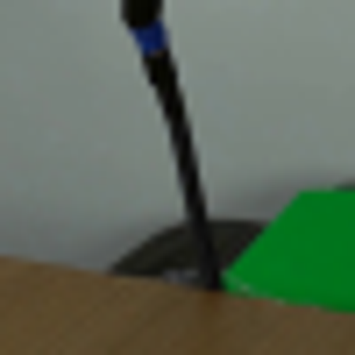
视觉工具实际返回图片 7

视觉工具实际返回图片 8
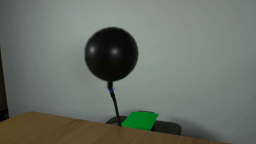
视觉工具实际返回图片 9
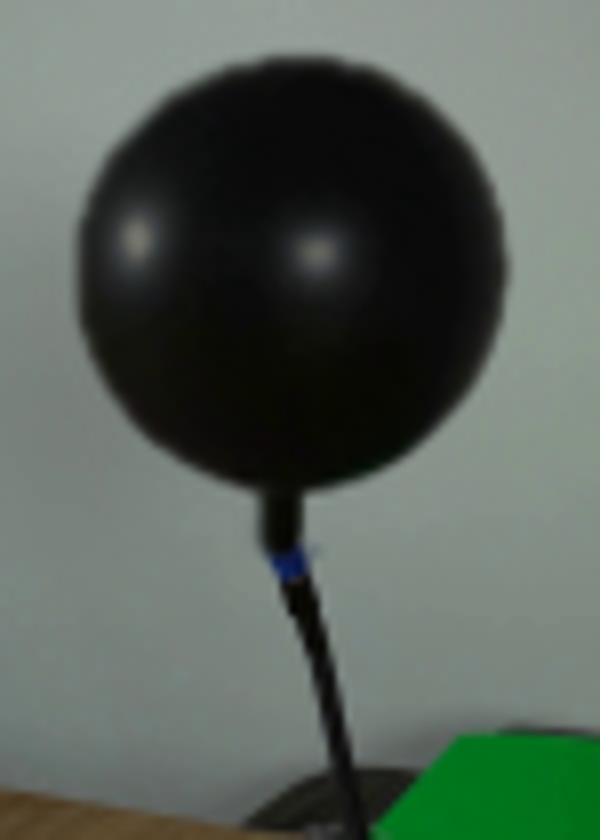
视觉工具实际返回图片 10
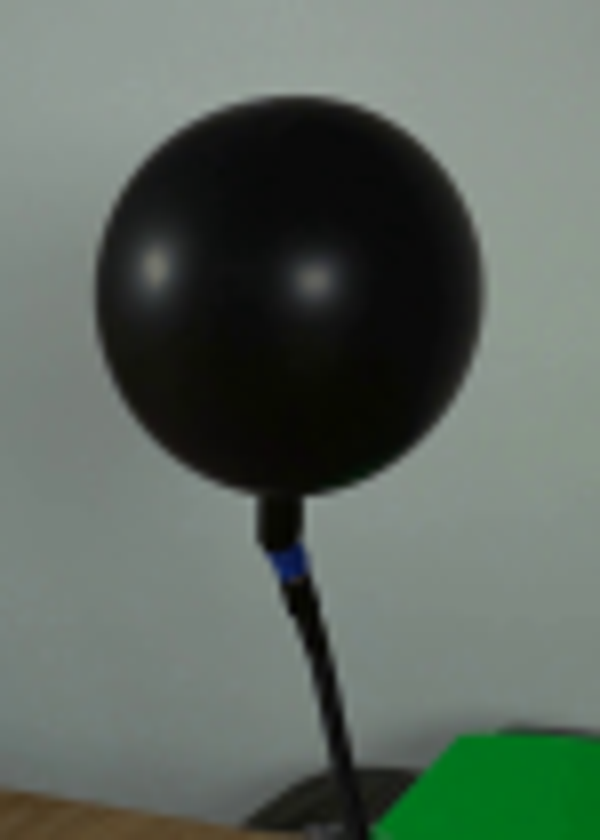
视觉工具实际返回图片 11
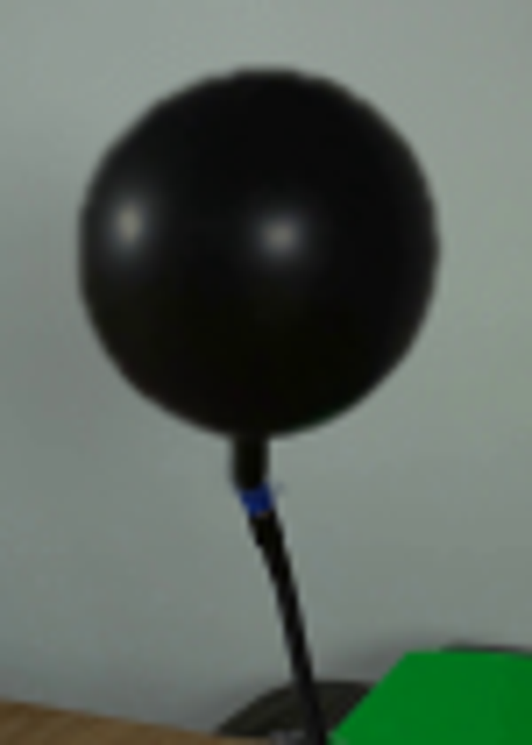
视觉工具实际返回图片 12
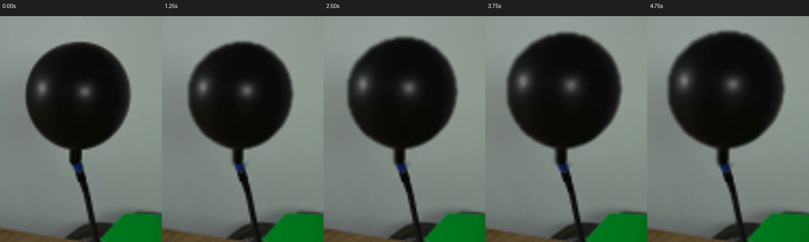
视觉工具实际返回图片 13

视觉工具实际返回图片 14
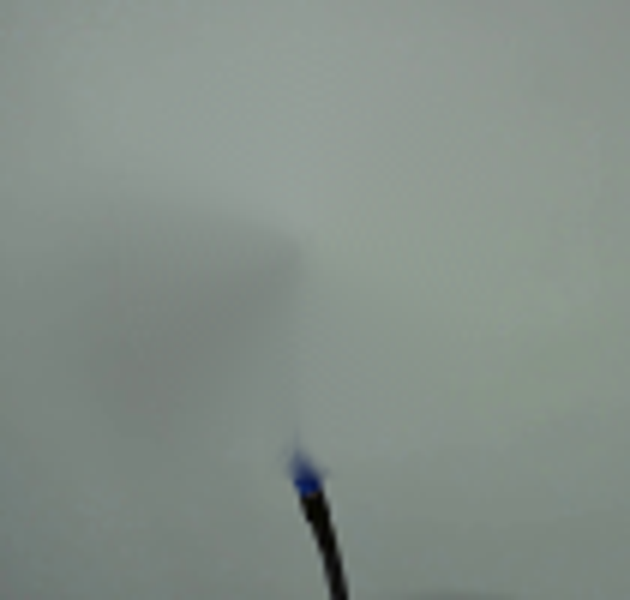
视觉工具实际返回图片 15
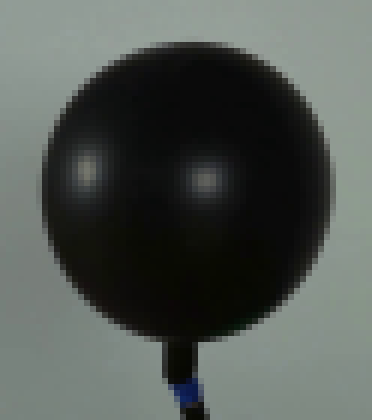
保存候选 1 份；完成命令 30 次；可验证图片返回 15 张。原始 API 响应与完整日志保留在本地。